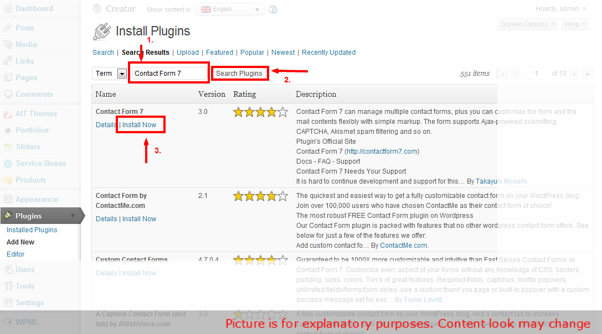
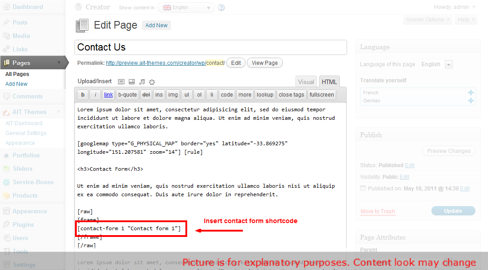
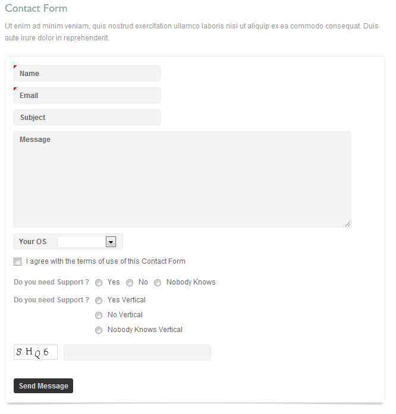
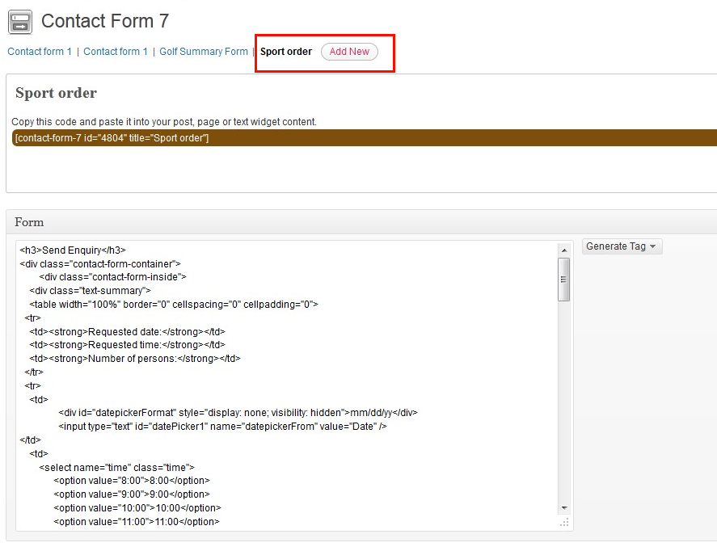

Online Documentation - The up to date documentation
Table of contents:
- 1. Hosting Requirements
- 2. Ristorante Installation Instructions
- 3. Creating Custom Menus
- 4. Setting Up Portfolio
- 5. Translating theme to other languages
- 6. Setting Up Contact Form
- 7. Displaying Portfolio Items
- 8. Editable Custom Types
- 9. Food Menu
- 10. Reservation Widget
- 11. Special reservation form
- 12. Advanced users: Editing HTML files
1. Hosting Requirements
We always test our theme on most standard hosting set ups, however make sure your hosting match the following requirements:
- PHP5 version
- PHP5 GD library installed
- Notices & Warnings are turned off
- We also recommend mod_rewrite enabled
- Memory limit set up at least 64MB
- upload_max_filesize at least 10MB
- Please also check that you have permissions to write to theme folder
2. Ristorante Installation Instructions
Installation Screencast
Whole installation process in covered in the following video tutorial.
Theme Installation
Theme should be installed standard way via wordpress admin panel.
- Please navigate to "Appearance -> Themes -> Install Themes"
- Click on Upload
- Select your theme from WP folder that is included in the Zip file you purchased.
- Click Install Now
- After the theme is successfully installed, click Activate
[notification type="attention"]Please, do not change the name of theme folder and prefix of Wordpress database tables (default prefix is "wp_").[/notification]
Importing Default Content
For faster site development we recommend you to import default content. Default content shows you all page layouts, shortcodes and other post types. If youd like to import it, you can do it via Tools -> Import -> WordPress -> Upload file and import. Please select a file called defaultcontent-export.xml and and simply click Upload file and import. We recommend you installing Contact Form 7? plugin before running import. Itll import you also contact form examples.
NOTE: for importing content use this plugin WordPress Importer.
{kind=link}
Setting Up Homepage and Blog
Please note that you have to select a homepage and posts page for our theme to work properly.
1. If you havent uploaded our default content, please create a new page. You can of also edit the existing homepage we provided in default content.
2. Select Homepage template layout for the page that should become your homepage.
{kind=link}
3. Navigate to: Admin -> Settings -> Reading and set a static Front page & Posts page:
{kind=link}
3. Creating Custom Menus
1. Navigate to: Appearance Menus
2. Now you can choose any items like pages, categories or custom links from the left column them to add to Main menu or Footer menu.
After you have added in your items, you can use drag and drop to order individual items. You can also click each item to reveal additional configuration options.
When you have finished building your custom menu, make sure you click the Save Menu button.
3. Its also important to define which menu will become your Primary menu and which one will be a Footer menu. This can be set in Theme Locations box on the left hand side.
{kind=link}
4. Setting Up Portfolio
Theme provides powerful custom built Portfolio. You can use it to display various item types like images, videos or websites. You can simply add in new items to portfolio by click on Portfolios -> Add new Item from WP-Admin and then manage all items exactly like standard wordpress posts or pages.
{kind=link}
{kind=link}
Portfolio items can stored into unlimited number of Portfolio Categories. You can then select which portfolio youd like to include on a specific page or post. To manage portfolio categories please navigate to Portfolio -> Portfolio Categories from WP-Admin.
{kind=link}
5. Translating theme to other languages
You can translate your website to any language. Theme is WPML wordpress plugin compatible.
When you have this wordpress plugin then go to Plugins > Add New > Upload, upload and activate your WPML package. In WP-Menu should appear WPML button. Click on it and choose languages and default language. At top of Admin should appear language selector. Then you can simply switch between your languages and set up custom admin values for every language.
{kind=link}
You can translate widgets and widget titles too, but you must use lang shortcode: [lang code=en]Text[/lang]
{kind=link}
6. Setting Up Contact Form
For contact form we use a free wodpress plugin called Contact Form 7. More info about this plugin can be found on the following url: http://contactform7.com/
To install this plugin go to Plugins > Add new and type into search bar Contact Form 7. Find the plugin and click to Install Now.

Then click Activate Plugin. A new menu section will be created at the left hand side. Itll be calledContact.
{kind=link}
{kind=link}
{kind=link}
If you want to have the same contact form like we have at our demo site, you can also install Really Simple CAPTCHA plugin. Code that we use on our demo site is as follows. Please insert it into Form box in Contact settings page:
<p>
<label for="your-name">Name <span>*</span></label>[text* your-name]
</p><p>
<label for="your-email">Email <span>*</span></label>[email* your-email]
</p><p>
<label for="your-subject">Subject</label>[text your-subject]
</p><p>
<label for="your-message">Message</label>[textarea your-message]
</p><p>
<label for=" slect-os">Your OS</label>[select slect-os " " "Windows XP" "Windows 7" "Apple" "Linux"]
</p><p>
[checkbox* agreement use_label_element exclusive "I agree with the terms of use of this Contact Form"]
</p><p>
<span>Do you need Support ?</span>[radio radiobuts use_label_element "Yes" "No" "Nobody Knows"]
</p><p>
<span>Do you need Support ?</span>[radio radio-vertical use_label_element "Yes Vertical" "No Vertical" "Nobody Knows Vertical"]
</p><p>
[captchac captcha-1] [captchar captcha-1]
</p><p>[submit "Send Message"]</p>
Once you have your contact form created, you can insert into to any of you pages with a simplecontact-form shortcode:


{kind=link}
{kind=link}
{kind=link}
7. Displaying Portfolio Items
You can insert custom portfolio items to any post or page with a handy custom built button in wordpress WYSIWYG editor:
{kind=link}
From pop-up dialog you can select which portfolio category you want to show in post or page, specify width and height of portoflio items, configure how many columns should portfolio have and also specify where to show item description.
{kind=link}
When you click to Insert button, the shortcode will be automatically inserted into content of your post or page:
{kind=link}
Now you can preview your changes on the frontend part.
{kind=link}
8. Editable Custom Types
This custom type has special functionality, because it is editable directly from the wordpress admin. The purpose of this custom type is to provide a general purpose solution to your business. For example it can be used to book boats, bikes, cars, planes and any other of your choice. You can activate and edit them in AIT Admin General Settings -> Editable Type Tab.
{kind=link}
First of them have implemented reservation module. There are also a reservation widget for it (see also reservation widget documentation).
Second editable type is Menu type. This type have a widget for displaying a featured items and shortcode for list menu items in the page (see also menus shortcode documentation). Shortcode can be used from visual editor, where is an icon for it.
9. Food Menu
Menus Shortcode is accesible from Visual editor, where you can find an icon for it.
{kind=link}
[raw]
[frame bgcolor="#f2f2f2" version="light"]
[code]// Example of menus shortcode:
[get_menu_category excerpt="290" number="3" category="31"]
[/code]
[/frame]
[/raw]
10. Reservation Widget
Purpose of the widget is to provide the reservation functionality in a widget. Showcase of the widget can be seen in the Ristorante template by AIT Themes. The widget parameters are in the picture below.
{kind=link}
The datepicker format can have one of the following values:
- mm/dd/yy - example: 06/15/2012
- yy-mm-dd - example: 2012-06-15
- d M, y - example: 15 Jun, 12
- d MM, y - example: 15 June, 12
- DD, d MM, y - example: Friday, 15 June, 2012
11. Special reservation form
For each your custom type you can create special reservation form, for example for booking some of provided sports.
Example of this form.
Here is the tutorial how you can create special reservation form like you can see in this picture:
{kind=link}
See also video tutorial how you can set up special form:
Required plugins:
- Contact Form 7
- Really Simple CAPTCHA
All you need to do is just create new form and insert shortcode of contact form into page where you want to have booking. For fast set up here is the example of code which you can use for creating form layout:
[frame bgcolor="#d2d6d9" version="light"]
<h3>Send Enquiry</h3>
<div class="contact-form-container">
<div class="contact-form-inside">
<div class="text-summary">
<table width="100%" border="0" cellspacing="0" cellpadding="0">
<tr>
<td><strong>Requested date:</strong></td>
<td><strong>Requested time:</strong></td>
<td><strong>Number of persons:</strong></td>
</tr>
<tr>
<td>
<div id="datepickerFormat" style="display: none; visibility: hidden">mm/dd/yy</div>
<input type="text" id="datePicker1" class="datePicker" name="datepickerFrom" value="Date" />
</td>
<td>
<select name="time" class="time">
<option value="8:00">8:00</option>
<option value="9:00">9:00</option>
<option value="10:00">10:00</option>
<option value="11:00">11:00</option>
<option value="12:00">12:00</option>
<option value="13:00">13:00</option>
<option value="14:00">14:00</option>
<option value="15:00">15:00</option>
<option value="16:00">16:00</option>
</select>
</td>
<td>
<select name="persons" class="persons">
<option value="1">1</option>
<option value="2">2</option>
<option value="3">3</option>
<option value="4">4</option>
<option value="5">5</option>
<option value="6">6</option>
</select>
</td>
</tr>
</table>
</div>
</div>
</div>
<h2>Please fill Your Contact Information to complete the Order:</h2>
<table class="contact-form-user">
<tr>
<td>First Name:</td>
<td>[text* your-name]</td>
<td class="empty"></td>
<td>Address:</td>
<td>[text* your-address]</td>
</tr>
<tr><td>Last Name:</td>
<td>[text* your-surname]</td>
<td class="empty"></td>
<td>Town/City:</td>
<td>[text* your-city]</td>
</tr>
<tr><td>E-mail:</td>
<td>[text* your-email]</td>
<td class="empty"></td>
<td>State/Province:</td>
<td>[text* your-state]</td>
</tr>
<tr>
<td>Telephone:</td>
<td>[text* your-phone]</td>
<td class="empty"></td>
<td>Country:</td>
<td>[text* your-country]</td>
</tr>
<tr>
<td>Fax:</td><td>[text* your-fax]</td>
<td class="empty"></td><td>ZIP Code:</td>
<td>[text* your-zip]</td></tr>
<tr>
<td colspan="5"> </td>
</tr>
<tr>
<td colspan="5">Special Requirements</td>
</tr>
<tr>
<td colspan="5">[textarea* your-options]</td>
</tr>
<tr>
<td colspan="5"> </td>
</tr>
<tr>
<td colspan="5"><strong>Security Check</strong> (please enter text below)</td>
</tr>
<tr>
<td class="captcha">[captchac captcha-330]</td>
<td>[captchar captcha-330]</td>
<td class="empty"></td>
<td colspan="2">[acceptance acceptance-1 default:on]I agree with the terms and conditions</td>
</tr>
<tr>
<td colspan="5">[submit "Send"]</td>
</tr>
</table>
[/frame]

{kind=link}
Insert shortcode of contact form into page where you want to have this form.
{kind=link}
12. Advanced users: Editing HTML files
If you are an advanced user and would like to edit HTML directly, please be advised that we use a MVC architecture that allowed us to completely separate HTML content from standard WordPress PHP files.
- HTML templates can be found in folder ./Templates
- CSS is in file style.less.css, please note that style.css is generate dynamically and all your changes will be therefore deleted
You can read more about our templating engine WpLatte on the following url.